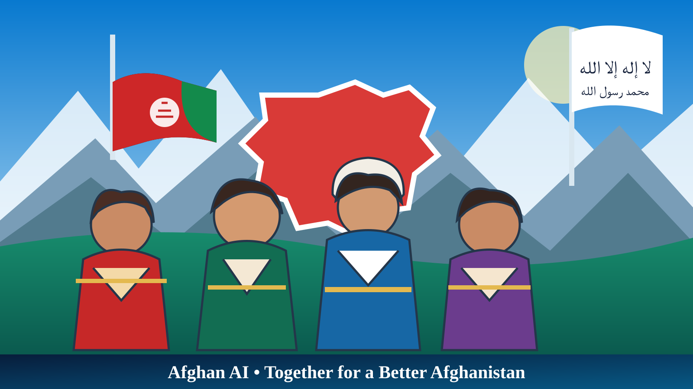

👨👩👧👦
حمایت از خانوادهها
راهنمایی و ارجاع خانوادههای نیازمند به خدمات و نهادهای مرتبط، با حفظ کرامت و محرمیت.

با هم برای آموزش، سلامت، توانمندسازی و کرامت انسانی کودکان و خانوادههای نیازمند.
مرکز حمایت اجتماعی Afghan AI برای معرفی برنامههای حمایتی، راهنمایی خانوادهها و ایجاد مسیر شفاف برای کمکرسانی طراحی شده است.
راهنمایی و ارجاع خانوادههای نیازمند به خدمات و نهادهای مرتبط، با حفظ کرامت و محرمیت.
معرفی فرصتهای آموزشی، لوازم مکتب و برنامههای پشتیبانی از ادامه تحصیل.
راهنمایی برای دسترسی به خدمات صحی و ارجاع موارد ضروری به مراکز معتبر.
گزارشدهی روشن درباره منابع، مصارف و نتایج؛ پس از ایجاد سازوکار تأیید و نظارت.
جمعآوری حداقل اطلاعات ضروری، دسترسی محدود و بررسی انسانی درخواستها.
تمرکز بر آموزش، مهارتآموزی و راهحلهایی که استقلال خانوادهها را تقویت کند.